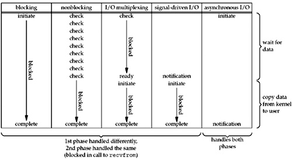

Java NIO (JSR 51)定义了Java new I/O API，提案2000年提出,2002年正式发布。 JDK 1.4起包含了相应的API实现。
JAVA NIO2 (JSR 203)定义了更多的 New I/O APIs， 提案2003提出，直到2011年才发布， 最终在JDK 7中才实现。
JSR 203除了提供更多的文件系统操作API(包括可插拔的自定义的文件系统)， 还提供了对socket和文件的异步 I/O操作。 同时实现了JSR-51提案中的socket channel全部功能,包括对绑定， option配置的支持以及多播multicast的实现。
当前很多的项目还停留在JAVA NIO的实现上， 对JAVA AIO(asynchronous I/O)着墨不多。 本文整理了一些关于JAVA AIO的介绍，以及netty对AIO的支持。
以下内容只针对socket的I/O操作， 不涉及对文件的处理。
JDK AIO API
首先介绍以下I/O模型。
Unix定义了五种I/O模型， 下图是五种I/O模型的比较。
- 阻塞I/O
- 非阻塞I/O
- I/O复用（select、poll、linux 2.6种改进的epoll）
- 信号驱动IO（SIGIO）
- 异步I/O（POSIX的aio_系列函数）

POSIX把I/O操作划分成两类：
- 同步I/O: 同步I/O操作导致请求进程阻塞，直至操作完成
- 异步I/O: 异步I/O操作不导致请求阻塞
所以Unix的前四种I/O模型都是同步I/O, 只有最后一种才是异步I/O。
传统的Java BIO (blocking I/O)是Unix I/O模型中的第一种。
Java NIO中如果不使用select模式，而只把channel配置成nonblocking则是第二种模型。
Java NIO select实现的是一种多路复用I/O。 底层使用epoll或者相应的poll系统调用， 参看我以前整理的一篇文章： java 和netty epoll实现
第四种模型JDK应该是没有实现。
Java NIO2增加了对第五种模型的支持，也就是AIO。
OpenJDK在不同平台上的AIO实现
在不同的操作系统上,AIO由不同的技术实现。
通用实现可以查看这里。
Windows上是使用完成接口(IOCP)实现,可以参看WindowsAsynchronousServerSocketChannelImpl,
其它平台上使用aio调用UnixAsynchronousServerSocketChannelImpl, UnixAsynchronousSocketChannelImpl, SolarisAsynchronousChannelProvider
常用类
- AsynchronousSocketChannel
- Asynchronous connect
- Asynchronous read/write
- Asynchronous scatter/gather (multiple buffers)
- Read/write operations support timeout
- failed method invoked with timeout exception
- Implements NetworkChannel for binding, setting socket options, etc
AsynchronousServerSocketChannel
还实现了Asynchronous accept
AsynchronousDatagramChannel
- Asynchronous read/write (connected)
- Asynchronous receive/send (unconnected)
- Implements NetworkChannel for binding, setting socket options, etc.
- Implements MulticastChannel
- CompletionHandler
Java AIO 例子
异步channel API提供了两种方式监控/控制异步操作(connect,accept, read，write等)。第一种方式是返回java.util.concurrent.Future对象， 检查Future的状态可以得到操作是否完成还是失败，还是进行中， future.get阻塞当前进程。
第二种方式为操作提供一个回调参数java.nio.channels.CompletionHandler，这个回调类包含completed,failed两个方法。
channel的每个I/O操作都为这两种方式提供了相应的方法， 你可以根据自己的需要选择合适的方式编程。
下面以一个最简单的Time服务的例子演示如何使用异步I/O。 客户端连接到服务器后服务器就发送一个当前的时间字符串给客户端。 客户端毋须发送请求。 逻辑很简单。
Server实现
|
|
这个例子使用了两种方式。 accept使用了回调的方式， 而发送数据使用了future的方式。
Client实现
|
|
客户端也使用了两种方式， connect使用了future方式，而接收数据使用了回调的方式。
Netty AIO
Netty也支持AIO并提供了相应的类： AioEventLoopGroup,AioCompletionHandler, AioServerSocketChannel, AioSocketChannel， AioSocketChannelConfig。
其它使用方法和NIO类似。
io.netty.buffer和java.nio.ByteBuffer的区别
官方文档Using as a generic library描述了两者的区别，主要还是友好性，扩展和性能的考虑。
http://zizihaier.iteye.com/blog/1767409也提到：
ByteBuffer主要有两个继承的类分别是：HeapByteBuffer和MappedByteBuffer。他们的不同之处在于HeapByteBuffer会在JVM的堆上分配内存资源，而MappedByteBuffer的资源则会由JVM之外的操作系统内核来分配。DirectByteBuffer继承了MappedByteBuffer，采用了直接内存映射的方式，将文件直接映射到虚拟内存，同时减少在内核缓冲区和用户缓冲区之间的调用，尤其在处理大文件方面有很大的性能优势。但是在使用内存映射的时候会造成文件句柄一直被占用而无法删除的情况，网上也有很多介绍。
Netty中使用ChannelBuffer来处理读写，之所以废弃ByteBuffer，官方说法是ChannelBuffer简单易用并且有性能方面的优势。在ChannelBuffer中使用ByteBuffer或者byte[]来存储数据。同样的，ChannelBuffer也提供了几个标记来控制读写并以此取代ByteBuffer的position和limit，分别是：
0 <= readerIndex <= writerIndex <= capacity，同时也有类似于mark的markedReaderIndex和markedWriterIndex。当写入buffer时，writerIndex增加，从buffer中读取数据时readerIndex增加，而不能超过writerIndex。有了这两个变量后，就不用每次写入buffer后调用flip()方法，方便了很多。
Netty的零拷贝(zero copy)
Netty的“零拷贝”主要体现在如下三个方面：
1) Netty的接收和发送ByteBuffer采用DIRECT BUFFERS，使用堆外直接内存进行Socket读写，不需要进行字节缓冲区的二次拷贝。如果使用传统的堆内存（HEAP BUFFERS）进行Socket读写，JVM会将堆内存Buffer拷贝一份到直接内存中，然后才写入Socket中。相比于堆外直接内存，消息在发送过程中多了一次缓冲区的内存拷贝。
2) Netty提供了组合Buffer对象，可以聚合多个ByteBuffer对象，用户可以像操作一个Buffer那样方便的对组合Buffer进行操作，避免了传统通过内存拷贝的方式将几个小Buffer合并成一个大的Buffer。
3) Netty的文件传输采用了transferTo方法，它可以直接将文件缓冲区的数据发送到目标Channel，避免了传统通过循环write方式导致的内存拷贝问题。
参考
- Asynchronous I/O Tricks and Tips
- http://openjdk.java.net/projects/nio/resources/AsynchronousIo.html
- http://www.ibm.com/developerworks/cn/linux/l-async/
- http://www.178linux.com/archives/4811
- Netty系列之Netty高性能之道
- Is Netty's Zero Copy different from OS level Zero Copy?
- Unix Network Programming关于I/O模型的经典介绍